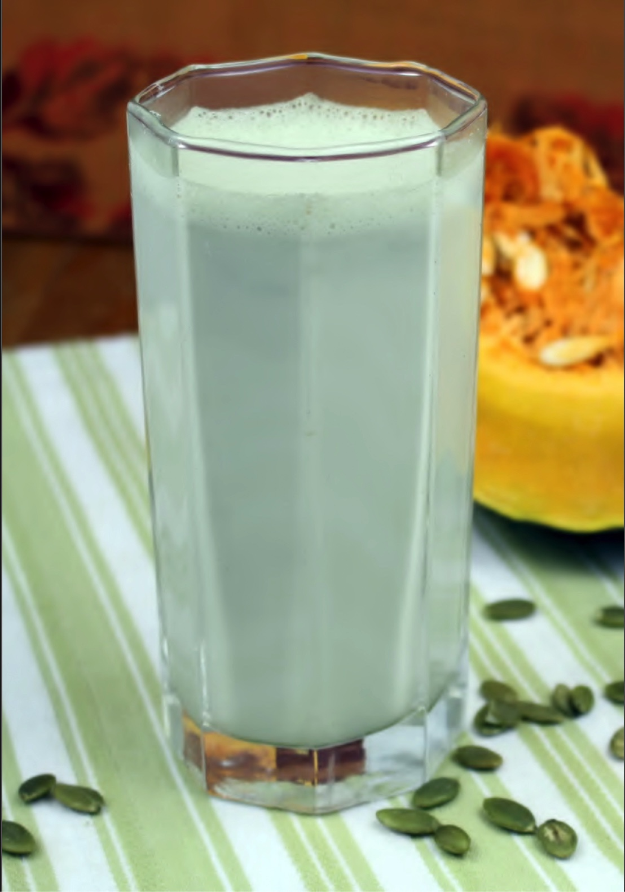
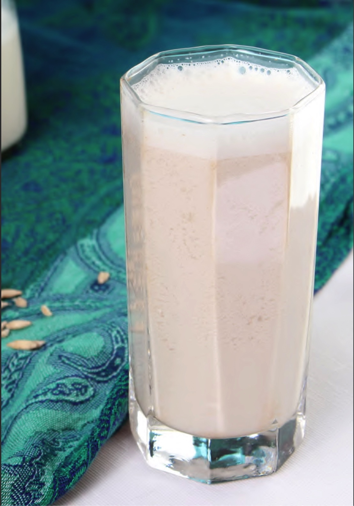

1 xícara de amêndoas
2 xícaras e meia de água
O leite pode ser feito da mesma forma com:
Semente de abóbora verde, sem sal e não torrada

Semente de Girassol

Meça uma xícara de amêndoas e coloque em um pote médio. Adicione água filtrada até cobrir as amêndoas.
Deixe de molho por 12 horas. Isso permite que as amêndoas amoleçam, facilitando o trabalho do liquidificador e retirando parte dos fitatos presentes nas amêndoas. Os fitatos são componentes presentes em sementes, que as protegem de predadores. Podem atrapalhar a absorção de algumas vitaminas e minerais pelo nosso sistema digestivo, sendo recomendável que toda semente ou castanha seja deixada de molho previamente.
Após 12 horas, dispense a água do molho e lave as amêndoas com água abundante.
Em seguida, coloque as amêndoas em um liquidificador.
Adicione a água filtrada e bata até virar um suco.
Coloque o suco no pano voal e coe até não sair mais leite do coador.
Não jogue as sobras das amêndoas fora. Congele-as e use para fazer cookies e bolos (veja receitas adiante).
O leite está pronto. Coloque-o em uma garrafa e guarde na geladeira para usar depois.
Validade: de 2 a 3 dias na geladeira.
Pode congelar, mas lembre-se de agitar antes de beber
Recomenda-se esterilizar a garrafa de leite para aumentar a validade.
Sempre agite antes de beber, pois esse leite pode decantar